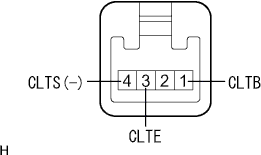

Automatic Light Control Sensor On-vehicle Inspection |
| 1. Inspect Automatic Light Control Sensor |
 |
Using SST (Toyota electrical tester), measure the voltage between the connector terminals.
| Tester Connection (Terminal Symbol) | Condition | Standard |
|---|---|---|
| 1(CLTB) - 3(CLTE) | IG ON | 11 to 14 V |
Using SST (Toyota electrical tester), measure the resistance between the connector terminal and body ground.
| Tester Connection (Terminal Symbol) | Condition | Standard |
|---|---|---|
| 3 (CLTE) - Body ground | Always | Below 1 Ω |
Using SST (TaSCAN), inspect that a waveform is generated between the terminals.
| Inspection terminals (terminal symbols) [positive - negative] | Condition | Standard |
|---|---|---|
| 4(CLTS) - 3(CLTE) | IG ON, headlight dimmer switch AUTO | Pulse generation (waveform 1) |
 |
Waveform 1
| Item | Description |
|---|---|
| Tool Setting | 5V/DIV、5ms/DIV |